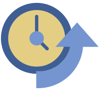

Outbyte Driver Updater will scan, identify and recommend driver updates. It can quickly and easily update drivers to boost performance and improve reliability to your PC
{kind=link}
{kind=link}
{kind=link}
-
Safeguard your hardware and gain maximum performance with Outbyte Driver Updater
Regular scheduled driver updates ensure your system is receiving the most up-to-date bug fixes, power improvements and new features from the original manufacturer's driver updates.
-
Protect your system from faulty and unreliable aftermarket drivers with driver updates
Installation of erroneous or outdated drivers could seize up your PC and place your system at risk. Outbyte Driver Updater will accurately identify and consistently deliver only the correct drivers for your system.
-

Outbyte Driver Updater Saves you time
It can take numerous hours to track down each driver for all the hardware connected to your PC. Outbyte Driver Updater achieves this in minutes through a quick scan and driver update process.
-
A Driver Updater that is Safe and Easy to Use
Outbyte Driver Updater includes safety features like automatic backups, restore wizard, exclusions and scheduler to keep your hardware performing worry-free.
-

A Trusted and Recommended Driver Updater
Outbyte Driver Updater is recommended as a trusted solution by industry experts.
Why update my drivers?
Every time your operating system and software applications are updated, new device drivers are needed to ensure your hardware retains full functionality. Also, many manufacturers do not contact you with information that a new driver has been released leaving you unaware of better functionality, added features or important security patches.
Why use Outbyte Driver Updater?
One of the most important features of Outbyte Driver Updater is how it sources its driver updates. Outbyte Driver Updater sources from the original equipment manufacturer only. Other driver update tools collect from various sources on the Internet and store them on local servers. This means you run the risk of the drivers being out of date or even worse - contain malware or spyware. Outbyte Driver Updater ensures you are getting maximum performance from your PC and its components with verified manufacturer device driver updates.
How to Update Your DriversMaximize performance and improve stability
of your PC with routine driver updates
Outbyte Driver Updater is compatible with: Windows 10, 8, 7, &
Vista.
- Quick Links:
- How to Install Outbyte Driver Updater